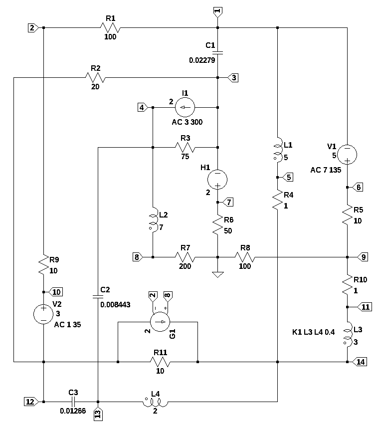

from sympy import *
import numpy as np
from tabulate import tabulate
import pandas as pd
import SymMNA
from IPython.display import display, Markdown, Math, Latex
init_printing()24 Superposition

24.1 Introduction
The circuit shown above is a large non-planar circuit designed to look at the problem of multiple sources with different phases and frequencies.
24.2 Circuit description
The circuit in Figure 24.1 is has 23 branches and 14 nodes. There are two dependent sources. V1 is a voltage source with a DC value of 5 volts and an AC value of 7 volts which has a phase of 135 degrees with a frequency of 3 Hz. I1 is a current source with a DC value of 2 amps and an AC value of 3 amps which has a phase of 300 degrees and a frequency of 7 Hz, as shaown in Table 24.1. There are two dependent sources. H1 is a current controlled voltage source with a gain of 2 and the controlling current is the current through V2. The voltage source V2, set to a value of zero volts, was included in the circuit to provide a monitoring point for the current in R9. The other dependednt source, G1, is a voltage controlled voltage source which has a gain of 2 and is controlled by the votages on nodes 2 and 8. The circuit also has a pair of coupled inductors, two inductors, three capacitors and 11 resistors.
| source | DC | Magnitude @ angle | frequency, Hz |
|---|---|---|---|
| V1 | 5 | 7 @ 135 | 3 |
| I1 | 2 | 3 @ 300 | 7 |
24.3 Circuit analysis
The MNA technique will be used analyze the circuit using the componet values shown in the schematic since the circuit is too large for meaninful symbolic analysis. The symbolic solution was taking longer than a couple of minutes on my i3-8130U CPU @ 2.20GHz, so I interruped the kernel and removed the code. The analysis will cover the four areas listed below.
- DC operating point with \(s=j \omega\) set to zero and the circuit driven by the DC values of the independent sources.
- AC analysis with V1 having a frequency of 3 Hz and I1 having a frequency of 7 Hz.
- Total response of the DC and AC sources at the respective frequencies.
The results obtained from MNA will be compared to those obtained from LTSpice.
The netlist generated by LTSpice is listed below:
V1 6 1 5 AC 7 135
V2 10 12 0 AC 0 0
I1 3 4 2 AC 3 300
L3 11 14 3 Rser=0
L1 1 5 5 Rser=0
L4 14 13 2 Rser=0
L2 4 8 7 Rser=0
H1 7 3 V2 2
G1 12 14 8 2 2
C1 3 1 0.02279
C2 4 13 0.008443
C3 13 12 0.01266
R9 2 10 10
R6 7 0 50
R4 5 14 1
R1 1 2 100
R3 3 4 75
R7 0 8 200
R11 14 12 10
R5 6 9 10
R10 9 11 1
R8 9 0 100
R2 3 12 20
K1 L3 L4 0.4The following Python modules are used in this analysis.
In electrical engineering, a time invarient sinusudial signals can be represented either by polar or rectangular notation. The function polar converts the polar representation, also called a phasor to rectangular notation and the second function converts rectangular notation to magnitude and phase.
def polar2rec(mag, ang, units='deg'):
''' polar to rectangular conversion
mag: float
magnitude of the time invarient sinusudial signal
ang: float
the angle of the time invarient sinusudial signal
units: string
if units is set to deg, and is in degrees not radians
returns: complex
rectangular corrdinates of voltage vector
'''
if units == 'deg':
ang = ang * np.pi / 180
return mag * np.exp(1j * ang)
def rec2polar(value):
'''rectangular to polar conversion
value: complex float
returns:
magnitude, phase (in degrees)
'''
return float(abs(value)), float(arg(value)*180/np.pi)24.3.1 Load the netlist
The netlist generated by LTSpice is pasted into the cell below and some edits were made to remove the inductor series resistance and the independent sources are set to their DC values.
net_list = '''
V1 6 1 5
V2 10 12 0
I1 3 4 2
L3 11 14 3
L1 1 5 5
L4 14 13 2
L2 4 8 7
H1 7 3 V2 2
G1 12 14 8 2 2
C1 3 1 0.02279
C2 4 13 0.008443
C3 13 12 0.01266
R9 2 10 10
R6 7 0 50
R4 5 14 1
R1 1 2 100
R3 3 4 75
R7 0 8 200
R11 14 12 10
R5 6 9 10
R10 9 11 1
R8 9 0 100
R2 3 12 20
K1 L3 L4 0.4
'''Generate the network equations.
report, network_df, df2, A, X, Z = SymMNA.smna(net_list)
# Put matricies into SymPy
X = Matrix(X)
Z = Matrix(Z)
NE_sym = Eq(A*X,Z)Generate markdown text to display the network equations.
temp = ''
for i in range(len(X)):
temp += '${:s}$<br>'.format(latex(Eq((A*X)[i:i+1][0],Z[i])))
Markdown(temp)\(- C_{1} s v_{3} + I_{L1} - I_{V1} + v_{1} \left(C_{1} s + \frac{1}{R_{1}}\right) - \frac{v_{2}}{R_{1}} = 0\)
\(v_{2} \cdot \left(\frac{1}{R_{9}} + \frac{1}{R_{1}}\right) - \frac{v_{10}}{R_{9}} - \frac{v_{1}}{R_{1}} = 0\)
\(- C_{1} s v_{1} - I_{H1} + v_{3} \left(C_{1} s + \frac{1}{R_{3}} + \frac{1}{R_{2}}\right) - \frac{v_{4}}{R_{3}} - \frac{v_{12}}{R_{2}} = - I_{1}\)
\(- C_{2} s v_{13} + I_{L2} + v_{4} \left(C_{2} s + \frac{1}{R_{3}}\right) - \frac{v_{3}}{R_{3}} = I_{1}\)
\(- I_{L1} - \frac{v_{14}}{R_{4}} + \frac{v_{5}}{R_{4}} = 0\)
\(I_{V1} + \frac{v_{6}}{R_{5}} - \frac{v_{9}}{R_{5}} = 0\)
\(I_{H1} + \frac{v_{7}}{R_{6}} = 0\)
\(- I_{L2} + \frac{v_{8}}{R_{7}} = 0\)
\(v_{9} \cdot \left(\frac{1}{R_{8}} + \frac{1}{R_{5}} + \frac{1}{R_{10}}\right) - \frac{v_{6}}{R_{5}} - \frac{v_{11}}{R_{10}} = 0\)
\(I_{V2} + \frac{v_{10}}{R_{9}} - \frac{v_{2}}{R_{9}} = 0\)
\(I_{L3} + \frac{v_{11}}{R_{10}} - \frac{v_{9}}{R_{10}} = 0\)
\(- C_{3} s v_{13} - I_{V2} - g_{1} v_{2} + g_{1} v_{8} + v_{12} \left(C_{3} s + \frac{1}{R_{2}} + \frac{1}{R_{11}}\right) - \frac{v_{3}}{R_{2}} - \frac{v_{14}}{R_{11}} = 0\)
\(- C_{2} s v_{4} - C_{3} s v_{12} - I_{L4} + v_{13} \left(C_{2} s + C_{3} s\right) = 0\)
\(- I_{L3} + I_{L4} + g_{1} v_{2} - g_{1} v_{8} + v_{14} \cdot \left(\frac{1}{R_{4}} + \frac{1}{R_{11}}\right) - \frac{v_{5}}{R_{4}} - \frac{v_{12}}{R_{11}} = 0\)
\(- v_{1} + v_{6} = V_{1}\)
\(v_{10} - v_{12} = V_{2}\)
\(- I_{L3} L_{3} s - I_{L4} M_{1} s + v_{11} - v_{14} = 0\)
\(- I_{L1} L_{1} s + v_{1} - v_{5} = 0\)
\(- I_{L3} M_{1} s - I_{L4} L_{4} s - v_{13} + v_{14} = 0\)
\(- I_{L2} L_{2} s + v_{4} - v_{8} = 0\)
\(- I_{V2} h_{1} - v_{3} + v_{7} = 0\)
As shown above MNA generated many equations and these would be difficult to solve by hand and a symbolic soultion would take a lot of computing time. The equations are displace in matrix notation.
NE_sym\(\displaystyle \left[\begin{matrix}- C_{1} s v_{3} + I_{L1} - I_{V1} + v_{1} \left(C_{1} s + \frac{1}{R_{1}}\right) - \frac{v_{2}}{R_{1}}\\v_{2} \cdot \left(\frac{1}{R_{9}} + \frac{1}{R_{1}}\right) - \frac{v_{10}}{R_{9}} - \frac{v_{1}}{R_{1}}\\- C_{1} s v_{1} - I_{H1} + v_{3} \left(C_{1} s + \frac{1}{R_{3}} + \frac{1}{R_{2}}\right) - \frac{v_{4}}{R_{3}} - \frac{v_{12}}{R_{2}}\\- C_{2} s v_{13} + I_{L2} + v_{4} \left(C_{2} s + \frac{1}{R_{3}}\right) - \frac{v_{3}}{R_{3}}\\- I_{L1} - \frac{v_{14}}{R_{4}} + \frac{v_{5}}{R_{4}}\\I_{V1} + \frac{v_{6}}{R_{5}} - \frac{v_{9}}{R_{5}}\\I_{H1} + \frac{v_{7}}{R_{6}}\\- I_{L2} + \frac{v_{8}}{R_{7}}\\v_{9} \cdot \left(\frac{1}{R_{8}} + \frac{1}{R_{5}} + \frac{1}{R_{10}}\right) - \frac{v_{6}}{R_{5}} - \frac{v_{11}}{R_{10}}\\I_{V2} + \frac{v_{10}}{R_{9}} - \frac{v_{2}}{R_{9}}\\I_{L3} + \frac{v_{11}}{R_{10}} - \frac{v_{9}}{R_{10}}\\- C_{3} s v_{13} - I_{V2} - g_{1} v_{2} + g_{1} v_{8} + v_{12} \left(C_{3} s + \frac{1}{R_{2}} + \frac{1}{R_{11}}\right) - \frac{v_{3}}{R_{2}} - \frac{v_{14}}{R_{11}}\\- C_{2} s v_{4} - C_{3} s v_{12} - I_{L4} + v_{13} \left(C_{2} s + C_{3} s\right)\\- I_{L3} + I_{L4} + g_{1} v_{2} - g_{1} v_{8} + v_{14} \cdot \left(\frac{1}{R_{4}} + \frac{1}{R_{11}}\right) - \frac{v_{5}}{R_{4}} - \frac{v_{12}}{R_{11}}\\- v_{1} + v_{6}\\v_{10} - v_{12}\\- I_{L3} L_{3} s - I_{L4} M_{1} s + v_{11} - v_{14}\\- I_{L1} L_{1} s + v_{1} - v_{5}\\- I_{L3} M_{1} s - I_{L4} L_{4} s - v_{13} + v_{14}\\- I_{L2} L_{2} s + v_{4} - v_{8}\\- I_{V2} h_{1} - v_{3} + v_{7}\end{matrix}\right] = \left[\begin{matrix}0\\0\\- I_{1}\\I_{1}\\0\\0\\0\\0\\0\\0\\0\\0\\0\\0\\V_{1}\\V_{2}\\0\\0\\0\\0\\0\end{matrix}\right]\)
The sysmbols generated by the Python code are extraced by the SymPy function free_symbols and then declared as SymPy variables.
# turn the free symbols into SymPy variables
var(str(NE_sym.free_symbols).replace('{','').replace('}',''))\(\displaystyle \left( v_{10}, \ R_{10}, \ R_{3}, \ R_{5}, \ R_{9}, \ V_{2}, \ R_{7}, \ s, \ I_{1}, \ C_{3}, \ R_{2}, \ v_{14}, \ I_{L3}, \ I_{L4}, \ L_{3}, \ R_{11}, \ I_{H1}, \ R_{6}, \ R_{8}, \ L_{4}, \ C_{2}, \ v_{13}, \ v_{11}, \ R_{1}, \ g_{1}, \ I_{V2}, \ v_{3}, \ v_{9}, \ R_{4}, \ v_{2}, \ v_{12}, \ v_{6}, \ I_{L2}, \ I_{L1}, \ I_{V1}, \ L_{2}, \ C_{1}, \ V_{1}, \ L_{1}, \ v_{8}, \ h_{1}, \ v_{4}, \ v_{5}, \ M_{1}, \ v_{1}, \ v_{7}\right)\)
24.4 DC operating point
Built a dictionary of element values.
element_values = SymMNA.get_part_values(network_df)
K1 = symbols('K1')
# calculate the coupling constant from the mutual inductance
element_values[M1] = element_values[K1]*np.sqrt(element_values[L3] *element_values[L4])
print('mutual inductance, M1 = {:.9f}'.format(element_values[M1]))mutual inductance, M1 = 0.979795897NE = NE_sym.subs(element_values)
NE_dc = NE.subs({s:0})
NE_dc # display the equations\(\displaystyle \left[\begin{matrix}I_{L1} - I_{V1} + 0.01 v_{1} - 0.01 v_{2}\\- 0.01 v_{1} - 0.1 v_{10} + 0.11 v_{2}\\- I_{H1} - 0.05 v_{12} + 0.0633333333333333 v_{3} - 0.0133333333333333 v_{4}\\I_{L2} - 0.0133333333333333 v_{3} + 0.0133333333333333 v_{4}\\- I_{L1} - 1.0 v_{14} + 1.0 v_{5}\\I_{V1} + 0.1 v_{6} - 0.1 v_{9}\\I_{H1} + 0.02 v_{7}\\- I_{L2} + 0.005 v_{8}\\- 1.0 v_{11} - 0.1 v_{6} + 1.11 v_{9}\\I_{V2} + 0.1 v_{10} - 0.1 v_{2}\\I_{L3} + 1.0 v_{11} - 1.0 v_{9}\\- I_{V2} + 0.15 v_{12} - 0.1 v_{14} - 2.0 v_{2} - 0.05 v_{3} + 2.0 v_{8}\\- I_{L4}\\- I_{L3} + I_{L4} - 0.1 v_{12} + 1.1 v_{14} + 2.0 v_{2} - 1.0 v_{5} - 2.0 v_{8}\\- v_{1} + v_{6}\\v_{10} - v_{12}\\v_{11} - v_{14}\\v_{1} - v_{5}\\- v_{13} + v_{14}\\v_{4} - v_{8}\\- 2.0 I_{V2} - v_{3} + v_{7}\end{matrix}\right] = \left[\begin{matrix}0\\0\\-2.0\\2.0\\0\\0\\0\\0\\0\\0\\0\\0\\0\\0\\5.0\\0\\0\\0\\0\\0\\0\end{matrix}\right]\)
Solve the network equations and display the results.
U_dc = solve(NE_dc,X)
table_header = ['unknown', 'mag']
table_row = []
for name, value in U_dc.items():
table_row.append([str(name),float(value)])
print(tabulate(table_row, headers=table_header,colalign = ('left','decimal'),tablefmt="simple",floatfmt=('5s','.6f')))unknown mag
--------- ------------
v1 -1444.606764
v2 701.805800
v3 626.530983
v4 564.749806
v5 -1444.606764
v6 -1439.606764
v7 583.602732
v8 564.749806
v9 -1449.580366
v10 916.447056
v11 -1465.073530
v12 916.447056
v13 -1465.073530
v14 -1465.073530
I_V1 -0.997360
I_V2 -21.464126
I_L3 15.493164
I_L1 20.466765
I_L4 0.000000
I_L2 2.823749
I_H1 -11.672055LTSpice results:
--- Operating Point ---
V(6): -1439.61 voltage
V(1): -1444.61 voltage
V(10): 916.447 voltage
V(12): 916.447 voltage
V(3): 626.531 voltage
V(4): 564.75 voltage
V(11): -1465.07 voltage
V(14): -1465.07 voltage
V(5): -1444.61 voltage
V(13): -1465.07 voltage
V(8): 564.75 voltage
V(7): 583.603 voltage
V(2): 701.806 voltage
V(9): -1449.58 voltage
I(C1): 4.72012e-11 device_current
I(C2): 1.71378e-11 device_current
I(C3): -3.015e-11 device_current
I(H1): -11.6721 device_current
I(L3): 15.4932 device_current
I(L1): 20.4668 device_current
I(L4): -4.72875e-11 device_current
I(L2): 2.82375 device_current
I(I1): 2 device_current
I(R9): -21.4641 device_current
I(R6): 11.6721 device_current
I(R4): 20.4668 device_current
I(R1): -21.4641 device_current
I(R3): 0.823749 device_current
I(R7): -2.82375 device_current
I(R11): -238.152 device_current
I(R5): 0.99736 device_current
I(R10): 15.4932 device_current
I(R8): -14.4958 device_current
I(R2): -14.4958 device_current
I(G1): -274.112 device_current
I(V1): -0.99736 device_current
I(V2): -21.4641 device_currentStore the results in a Pandas dataframe.
solutions = pd.DataFrame(U_dc.items(), columns=['unk', 'w=DC'])
solutions = solutions.set_index('unk')
solutions['w=DC'] = solutions['w=DC'].astype(float)
#solutions24.5 Independent sources each with a different frequency
The independent sources V1 and I1 each have different amplitudes, phases and frequencies. First we will solve the network equations for when V1 is active and I1 is set to zero. The following code set I1 to zero and calls the function polar2rec to convert the amplitude and phase to rectangular notation.
element_values[I1] = 0
element_values[V1] = polar2rec(7, 135, units='deg')Solve equations for \(\omega\) equal to 3 Hz. The value for \(\omega\) is calculated by: \(\omega = 2 \pi 3\), then use the substitute function to set \(s = 2 \pi 3j\). Then display the network equations with numerical values.
omega = 2*np.pi*3
NE_w1 = NE_sym.subs(element_values)
NE_w1 = NE_w1.subs({s:omega*1j})
NE_w1\(\displaystyle \left[\begin{matrix}I_{L1} - I_{V1} + v_{1} \cdot \left(0.01 + 0.429581379451868 i\right) - 0.01 v_{2} - 0.429581379451868 i v_{3}\\- 0.01 v_{1} - 0.1 v_{10} + 0.11 v_{2}\\- I_{H1} - 0.429581379451868 i v_{1} - 0.05 v_{12} + v_{3} \cdot \left(0.0633333333333333 + 0.429581379451868 i\right) - 0.0133333333333333 v_{4}\\I_{L2} - 0.159146800645552 i v_{13} - 0.0133333333333333 v_{3} + v_{4} \cdot \left(0.0133333333333333 + 0.159146800645552 i\right)\\- I_{L1} - 1.0 v_{14} + 1.0 v_{5}\\I_{V1} + 0.1 v_{6} - 0.1 v_{9}\\I_{H1} + 0.02 v_{7}\\- I_{L2} + 0.005 v_{8}\\- 1.0 v_{11} - 0.1 v_{6} + 1.11 v_{9}\\I_{V2} + 0.1 v_{10} - 0.1 v_{2}\\I_{L3} + 1.0 v_{11} - 1.0 v_{9}\\- I_{V2} + v_{12} \cdot \left(0.15 + 0.238635377966681 i\right) - 0.238635377966681 i v_{13} - 0.1 v_{14} - 2.0 v_{2} - 0.05 v_{3} + 2.0 v_{8}\\- I_{L4} - 0.238635377966681 i v_{12} + 0.397782178612232 i v_{13} - 0.159146800645552 i v_{4}\\- I_{L3} + I_{L4} - 0.1 v_{12} + 1.1 v_{14} + 2.0 v_{2} - 1.0 v_{5} - 2.0 v_{8}\\- v_{1} + v_{6}\\v_{10} - v_{12}\\- 56.5486677646163 i I_{L3} - 18.4687175543308 i I_{L4} + v_{11} - v_{14}\\- 94.2477796076938 i I_{L1} + v_{1} - v_{5}\\- 18.4687175543308 i I_{L3} - 37.6991118430775 i I_{L4} - v_{13} + v_{14}\\- 131.946891450771 i I_{L2} + v_{4} - v_{8}\\- 2.0 I_{V2} - v_{3} + v_{7}\end{matrix}\right] = \left[\begin{matrix}0\\0\\0\\0\\0\\0\\0\\0\\0\\0\\0\\0\\0\\0\\-4.94974746830583 + 4.94974746830583 i\\0\\0\\0\\0\\0\\0\end{matrix}\right]\)
Solve the network equations and display the results.
U_w1 = solve(NE_w1,X)
table_header = ['unknown', 'mag','phase, deg']
table_row = []
for name, value in U_w1.items():
table_row.append([str(name),float(abs(value)),float(arg(value)*180/np.pi)])
print(tabulate(table_row, headers=table_header,colalign = ('left','decimal','decimal'),tablefmt="simple",floatfmt=('5s','.6f','.6f')))unknown mag phase, deg
--------- -------- ------------
v1 1.214165 -42.658172
v2 5.054599 39.141345
v3 1.983213 -32.248064
v4 5.501867 67.083943
v5 7.598113 -22.913101
v6 5.787062 134.508799
v7 1.977375 -35.152486
v8 4.592470 33.669731
v9 5.241567 168.957875
v10 5.544043 40.383410
v11 5.350944 172.465292
v12 5.544043 40.383410
v13 5.619390 60.869229
v14 7.602773 -23.429285
I_V1 0.330707 -109.201912
I_V2 0.050272 -127.028107
I_L3 0.342104 62.074687
I_L1 0.068631 70.722730
I_L4 0.389029 -137.950576
I_L2 0.022962 33.669731
I_H1 0.039547 144.847514The results from LTSpice as shown below and they agree with the Python results. The DC values for the sources, V1 and I1, are set to zero.
--- AC Analysis ---
frequency: 3 Hz
V(6): mag: 5.78706 phase: 134.509° voltage
V(1): mag: 1.21416 phase: -42.6582° voltage
V(10): mag: 5.54404 phase: 40.3834° voltage
V(12): mag: 5.54404 phase: 40.3834° voltage
V(3): mag: 1.98321 phase: -32.2481° voltage
V(4): mag: 5.50187 phase: 67.0839° voltage
V(11): mag: 5.35094 phase: 172.465° voltage
V(14): mag: 7.60277 phase: -23.4293° voltage
V(5): mag: 7.59811 phase: -22.9131° voltage
V(13): mag: 5.61939 phase: 60.8692° voltage
V(8): mag: 4.59247 phase: 33.6697° voltage
V(7): mag: 1.97737 phase: -35.1525° voltage
V(2): mag: 5.0546 phase: 39.1413° voltage
V(9): mag: 5.24157 phase: 168.958° voltage
I(C1): mag: 0.351813 phase: 73.2905° device_current
I(C2): mag: 0.0977425 phase: -105.008° device_current
I(C3): mag: 0.474046 phase: -131.513° device_current
I(H1): mag: 0.0395475 phase: 144.848° device_current
I(L3): mag: 0.342104 phase: 62.0747° device_current
I(L1): mag: 0.0686314 phase: 70.7227° device_current
I(L4): mag: 0.389029 phase: -137.951° device_current
I(L2): mag: 0.0229624 phase: 33.6697° device_current
I(I1): mag: 0 phase: -0° device_current
I(R9): mag: 0.0502717 phase: -127.028° device_current
I(R6): mag: 0.0395475 phase: -35.1525° device_current
I(R4): mag: 0.0686314 phase: 70.7227° device_current
I(R1): mag: 0.0502717 phase: -127.028° device_current
I(R3): mag: 0.0819131 phase: -94.3412° device_current
I(R7): mag: 0.0229624 phase: -146.33° device_current
I(R11): mag: 0.716494 phase: -67.4048° device_current
I(R5): mag: 0.330707 phase: 70.7981° device_current
I(R10): mag: 0.342104 phase: 62.0747° device_current
I(R8): mag: 0.0524157 phase: 168.958° device_current
I(R2): mag: 0.265071 phase: -118.698° device_current
I(G1): mag: 1.304 phase: -98.6653° device_current
I(V1): mag: 0.330707 phase: -109.202° device_current
I(V2): mag: 0.0502717 phase: -127.028° device_currentw1 = pd.DataFrame(U_w1.items(), columns=['unk', 'w=3Hz'])
w1 = w1.set_index('unk')
w1['w=3Hz'] = w1['w=3Hz'].astype(complex)
solutions['w=3Hz'] = w1['w=3Hz']
#solutionsSolve the network equations with V1 set to zero and I1 active with a frequency of 7 Hz, an amplitude of 3 at a phase angle of 300.
element_values[I1] = polar2rec(3, 300, units='deg')
element_values[V1] = 0 #polar2rec(7, 135, units='deg')Solve equations for \(\omega\) equal to 7 Hz. The value for \(\omega\) is calculated by: \(\omega = 2 \pi 7\)
omega = 2*np.pi*7
NE_w2 = NE_sym.subs(element_values)
NE_w2 = NE_w2.subs({s:omega*1j})
NE_w2\(\displaystyle \left[\begin{matrix}I_{L1} - I_{V1} + v_{1} \cdot \left(0.01 + 1.00235655205436 i\right) - 0.01 v_{2} - 1.00235655205436 i v_{3}\\- 0.01 v_{1} - 0.1 v_{10} + 0.11 v_{2}\\- I_{H1} - 1.00235655205436 i v_{1} - 0.05 v_{12} + v_{3} \cdot \left(0.0633333333333333 + 1.00235655205436 i\right) - 0.0133333333333333 v_{4}\\I_{L2} - 0.371342534839621 i v_{13} - 0.0133333333333333 v_{3} + v_{4} \cdot \left(0.0133333333333333 + 0.371342534839621 i\right)\\- I_{L1} - 1.0 v_{14} + 1.0 v_{5}\\I_{V1} + 0.1 v_{6} - 0.1 v_{9}\\I_{H1} + 0.02 v_{7}\\- I_{L2} + 0.005 v_{8}\\- 1.0 v_{11} - 0.1 v_{6} + 1.11 v_{9}\\I_{V2} + 0.1 v_{10} - 0.1 v_{2}\\I_{L3} + 1.0 v_{11} - 1.0 v_{9}\\- I_{V2} + v_{12} \cdot \left(0.15 + 0.556815881922255 i\right) - 0.556815881922255 i v_{13} - 0.1 v_{14} - 2.0 v_{2} - 0.05 v_{3} + 2.0 v_{8}\\- I_{L4} - 0.556815881922255 i v_{12} + 0.928158416761876 i v_{13} - 0.371342534839621 i v_{4}\\- I_{L3} + I_{L4} - 0.1 v_{12} + 1.1 v_{14} + 2.0 v_{2} - 1.0 v_{5} - 2.0 v_{8}\\- v_{1} + v_{6}\\v_{10} - v_{12}\\- 131.946891450771 i I_{L3} - 43.0936742934386 i I_{L4} + v_{11} - v_{14}\\- 219.911485751286 i I_{L1} + v_{1} - v_{5}\\- 43.0936742934386 i I_{L3} - 87.9645943005142 i I_{L4} - v_{13} + v_{14}\\- 307.8760800518 i I_{L2} + v_{4} - v_{8}\\- 2.0 I_{V2} - v_{3} + v_{7}\end{matrix}\right] = \left[\begin{matrix}0\\0\\-1.5 + 2.59807621135332 i\\1.5 - 2.59807621135332 i\\0\\0\\0\\0\\0\\0\\0\\0\\0\\0\\0\\0\\0\\0\\0\\0\\0\end{matrix}\right]\)
Solve the network equations and display the results.
U_w2 = solve(NE_w2,X)
table_header = ['unknown', 'mag','phase, deg']
table_row = []
for name, value in U_w2.items():
table_row.append([str(name),float(abs(value)),float(arg(value)*180/np.pi)])
print(tabulate(table_row, headers=table_header,colalign = ('left','decimal','decimal'),tablefmt="simple",floatfmt=('5s','.6f','.6f')))unknown mag phase, deg
--------- ---------- ------------
v1 9.005916 163.707427
v2 32.516027 143.867055
v3 7.786210 133.896662
v4 47.805605 173.317623
v5 269.759059 42.448864
v6 9.005916 163.707427
v7 7.302031 133.715779
v8 26.042563 116.325861
v9 27.308899 -54.477160
v10 34.921833 143.365554
v11 31.025759 -53.448958
v12 34.921833 143.365554
v13 41.722434 164.330384
v14 269.726939 42.183778
I_V1 3.483553 -45.280685
I_V2 0.242382 -43.377657
I_L3 3.753386 134.053052
I_L1 1.248412 130.841984
I_L4 5.167787 -51.606488
I_L2 0.130213 116.325861
I_H1 0.146041 -46.284221The results from LTSpice as shown below and they agree with the Python results.
--- AC Analysis ---
frequency: 7 Hz
V(6): mag: 9.00592 phase: 163.707° voltage
V(1): mag: 9.00592 phase: 163.707° voltage
V(10): mag: 34.9218 phase: 143.366° voltage
V(12): mag: 34.9218 phase: 143.366° voltage
V(3): mag: 7.78621 phase: 133.897° voltage
V(4): mag: 47.8056 phase: 173.318° voltage
V(11): mag: 31.0258 phase: -53.449° voltage
V(14): mag: 269.727 phase: 42.1838° voltage
V(5): mag: 269.759 phase: 42.4489° voltage
V(13): mag: 41.7224 phase: 164.33° voltage
V(8): mag: 26.0426 phase: 116.326° voltage
V(7): mag: 7.30203 phase: 133.716° voltage
V(2): mag: 32.516 phase: 143.867° voltage
V(9): mag: 27.3089 phase: -54.4772° voltage
I(C1): mag: 4.48781 phase: 133.539° device_current
I(C2): mag: 3.44327 phase: -52.0221° device_current
I(C3): mag: 8.611 phase: -51.7727° device_current
I(H1): mag: 0.146041 phase: -46.2842° device_current
I(L3): mag: 3.75339 phase: 134.053° device_current
I(L1): mag: 1.24841 phase: 130.842° device_current
I(L4): mag: 5.16779 phase: -51.6065° device_current
I(L2): mag: 0.130213 phase: 116.326° device_current
I(I1): mag: 3 phase: -60° device_current
I(R9): mag: 0.242382 phase: -43.3777° device_current
I(R6): mag: 0.146041 phase: 133.716° device_current
I(R4): mag: 1.24841 phase: 130.842° device_current
I(R1): mag: 0.242382 phase: -43.3777° device_current
I(R3): mag: 0.561096 phase: 0.0650338° device_current
I(R7): mag: 0.130213 phase: -63.6741° device_current
I(R11): mag: 27.8613 phase: 35.1207° device_current
I(R5): mag: 3.48355 phase: 134.719° device_current
I(R10): mag: 3.75339 phase: 134.053° device_current
I(R8): mag: 0.273089 phase: -54.4772° device_current
I(R2): mag: 1.36359 phase: -33.9423° device_current
I(G1): mag: 30.5828 phase: 15.818° device_current
I(V1): mag: 3.48355 phase: -45.2807° device_current
I(V2): mag: 0.242382 phase: -43.3777° device_currentStore the Python results in a dataframe.
w2 = pd.DataFrame(U_w2.items(), columns=['unk', 'w=7Hz'])
w2 = w2.set_index('unk')
w2['w=7Hz'] = w2['w=7Hz'].astype(complex)
solutions['w=7Hz'] = w2['w=7Hz']
#solutions24.5.1 Superposition solution
Using the principle of superposition, we can add the results obtained above to get the solution for the unknown node voltages and inductor and source currents.
solutions['w1+w2'] = solutions['w=3Hz'] + solutions['w=7Hz']
solutions['dc+w1+w2'] = solutions['w1+w2'] + solutions['w=DC']
solutions| w=DC | w=3Hz | w=7Hz | w1+w2 | dc+w1+w2 | |
|---|---|---|---|---|---|
| unk | |||||
| v1 | -1444.606764 | 0.892908-0.822746j | -8.64425300+2.52654000j | -7.75134500+1.70379400j | -1452.3581009+1.7037940j |
| v2 | 701.805800 | 3.920302+3.190643j | -26.2616000+19.1734280j | -22.3412980+22.3640710j | 679.4645010+22.3640710j |
| v3 | 626.530983 | 1.677294-1.058215j | -5.39864500+5.61067700j | -3.72135100+4.55246200j | 622.8096302+4.5524620j |
| v4 | 564.749806 | 2.142328+5.067639j | -47.4808370+5.5629110j | -45.3385090+10.6305500j | 519.4112970+10.6305500j |
| v5 | -1444.606764 | 6.998594-2.958208j | 199.049815+182.069001j | 206.048410+179.110793j | -1238.558355+179.110793j |
| v6 | -1439.606764 | -4.056839+4.127001j | -8.64425300+2.52654000j | -12.7010930+6.6535420j | -1452.3078507+6.6535420j |
| v7 | 583.602732 | 1.616746-1.138482j | -5.04629800+5.27773900j | -3.42955200+4.13925700j | 580.1731709+4.1392570j |
| v8 | 564.749806 | 3.822070+2.546088j | -11.5492460+23.3415940j | -7.727175+025.8876810j | 557.0226300+25.8876810j |
| v9 | -1449.580366 | -5.144528+1.003921j | 15.8672200-22.2262750j | 10.7226920-21.2223540j | -1438.857674-21.222354j |
| v10 | 916.447056 | 4.223041+3.591982j | -28.0233350+20.8381170j | -23.8002940+24.4300990j | 892.6467620+24.4300990j |
| v11 | -1465.073530 | -5.304742+0.701652j | 18.4770390-24.9238190j | 13.1722970-24.2221670j | -1451.901233-24.222167j |
| v12 | 916.447056 | 4.223041+3.591982j | -28.0233350+20.8381170j | -23.8002940+24.4300990j | 892.6467620+24.4300990j |
| v13 | -1465.073530 | 2.735545+4.908599j | -40.1718250+11.2688080j | -37.4362800+16.1774060j | -1502.509810+16.177406j |
| v14 | -1465.073530 | 6.975936-3.022991j | 199.866246+181.124557j | 206.842182+178.101566j | -1258.231348+178.101566j |
| I_V1 | -0.997360 | -0.108769-0.312308j | 2.45114700-2.47528100j | 2.34237800-2.78759000j | 1.34501800-2.78759000j |
| I_V2 | -21.464126 | -0.030274-0.040134j | 0.17617300-0.16646900j | 0.14590000-0.20660300j | -21.31822600-0.20660300j |
| I_L3 | 15.493164 | 0.160214+0.302269j | -2.60981900+2.69754400j | -2.44960500+2.99981300j | 13.04355800+2.99981300j |
| I_L1 | 20.466765 | 0.022658+0.064783j | -0.81643100+0.94444400j | -0.79377300+1.00922700j | 19.67299300+1.00922700j |
| I_L4 | 0.000000 | -0.288881-0.260561j | 3.20950100-4.05032500j | 2.92062100-4.31088500j | 2.92062100-4.31088500j |
| I_L2 | 2.823749 | 0.019110+0.012730j | -0.05774600+0.11670800j | -0.03863600+0.12943800j | 2.78511300+0.12943800j |
| I_H1 | -11.672055 | -0.032335+0.022770j | 0.10092600-0.10555500j | 0.06859100-0.08278500j | -11.60346400-0.08278500j |
Display the superposition results in polar form.
table_header = ['unknown', 'mag','phase, deg']
table_row = []
for name, value in solutions['dc+w1+w2'].items():
table_row.append([str(name),float(abs(value)),float(arg(value)*180/np.pi)])
print(tabulate(table_row, headers=table_header,colalign = ('left','decimal','decimal'),tablefmt="simple",floatfmt=('5s','.6f','.6f')))unknown mag phase, deg
--------- ----------- ------------
v1 1452.359109 179.932785
v2 679.832450 1.885168
v3 622.826270 0.418799
v4 519.520071 1.172482
v5 1251.442158 171.771369
v6 1452.323098 179.737509
v7 580.187945 0.408771
v8 557.623872 2.660912
v9 1439.014175 -179.154980
v10 892.981003 1.567689
v11 1452.103269 -179.044219
v12 892.981003 1.567689
v13 1502.596898 179.383125
v14 1270.773895 171.943355
I_V1 3.095114 -64.242586
I_V2 21.319227 -179.444743
I_L3 13.384069 12.951908
I_L1 19.698863 2.936707
I_L4 5.207087 -55.882399
I_L2 2.788119 2.660912
I_H1 11.603759 -179.59122924.6 Summary
In this notebook a large non-planar circuit having independent sources with different DC values, different AC amplitudes, phases and frequencies was analyzed. The results were summed to obtain a total solution by applying the superposition thereom.